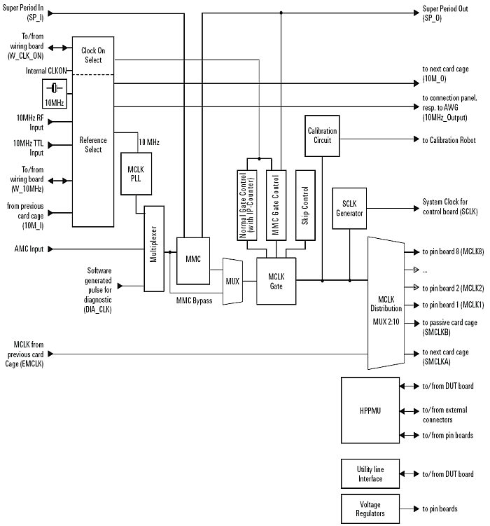

Clock board hardware overview
Each powered card cage (CC) contains one clock board. Its location in the CC is next to the first channel board (farthest from the DC/DC converter).
The clock board uses a dedicated bus on the control board for communication with other parts of the test system. The control board and the clock board are directly connected via feed-through couplers on the back-plane.
Clock generation and distribution
The main task of the clock board is to generate the master clock (MCLK) for the test system. The master clock is used as a reference for all timing signals within the test system.
The clock board generates MCLK either from an on-board 10 MHz crystal oscillator (see below) or from an external reference source.
In all, the high-performance clock board generates the following clock signals:
- high precision 10 MHz reference clock (RC)
- master clock (MCLK) fixed at 375 MHz
- system clock (SCLK) to synchronize signals between the control board and channel boards
The following functional blocks are used for distributing and synchronizing clocks:
- Clock distribution. The task of this block is to distribute
- the reference clock (RC) via the wiring board to other clock boards or to additional support racks
- the master clock (MCLK) via the cable distribution ring to other clock boards and to the channel boards.
Other functional blocks
In addition, the clock board contains the following functional blocks:
- Utility line interface to control external devices such as relays, solenoids or indicators on the DUT board.
- Digital AC internal adjustment (AC calibration) circuitry to allow adjustment of channel boards with the calibration robot.
- Auxiliary voltage generators to produce voltages for use by the interface modules on channel boards, the DPS and the DUT board.
Main components of the clock board
The following figure shows the main components:

Functional changes
- Introduced before SmarTest 6.3.2